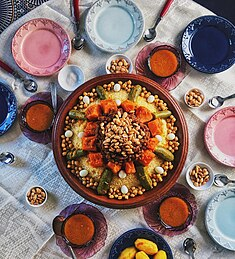

Couscous

Description:
Couscous is a North African dish made from steamed semolina wheat granules. It's commonly served as a side dish or base for stews, vegetables, and meats. Its light, fluffy texture and versatility make it a popular staple in Mediterranean and Middle Eastern cuisines.
Ingredients:
- Couscous grains
- Water or broth
- Olive oil or butter
- Salt
Steps to make it:
- Boil the Liquid: In a medium pot, bring 1 cup of water or broth to a boil. Add a pinch of salt and olive oil or butter.
- Prepare the Couscous: Once the liquid is boiling, remove the pot from heat. Stir in the couscous, then cover and let it sit for about 5 minutes to absorb the liquid.
- Olive oil or butter
- Fluff and Serve: After 5 minutes, use a fork to fluff the couscous, breaking up any clumps. You can add more olive oil, butter, or seasonings at this point for extra flavor. Serve it as a side dish or with stews, grilled meats, or vegetables.
Home